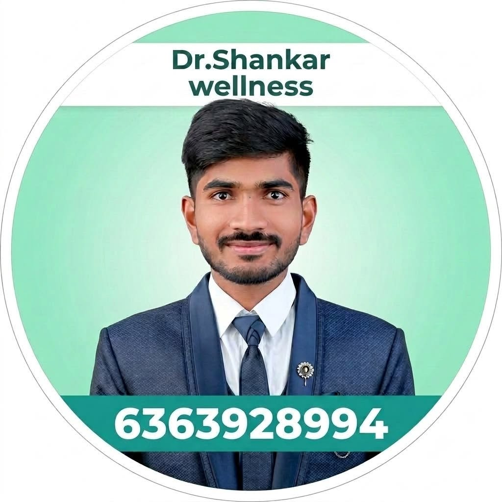

Acupressure
A traditional pressure-point practice offered as a complementary wellness session.

Dr. Shankar WELLNESSKANNADA WELLNESS · VIJAYAPURA & ONLINE
I’m Shankar Hugar. I share Kannada wellness education and offer complementary sessions inspired by traditional drugless practices. Meet in Vijayapura on Thursdays and Sundays, or ask about an online appointment.
years of practice
YouTube subscribers
Facebook followers
ABOUT DR. SHANKAR WELLNESS
I’m Shankar Hugar. For the past four years, I’ve been sharing wellness guidance and complementary drugless practices with people in Vijayapura. I also offer online consultations for those who prefer to connect from home.
On YouTube and Facebook, I share Kannada videos about wellness, lifestyle and traditional practices. In a consultation, we start by listening and explaining what a session involves.
See how to get started →COMPLEMENTARY WELLNESS SERVICES
Every session begins with a conversation. Dr. Shankar will explain the practice and answer your questions before you decide whether to continue.
A traditional pressure-point practice offered as a complementary wellness session.
Colour-based wellness practices discussed with you and adapted to your preferences.
Traditional Chinese Medicine-inspired approaches, explained before the session.
Traditional ear-point and marma practices, with your comfort and consent guiding the session.
A complementary practice for people who are interested in exploring it.
Practical conversations about food and daily routines to support informed choices.
An optional reading using your name and date of birth, offered for personal reflection.
Traditional approaches also featured in Dr. Shankar’s Kannada wellness videos.
✳ These practices are complementary wellness services, not a replacement for diagnosis or treatment by a licensed medical professional.
IN-PERSON & ONLINE
Meet in Vijayapura on Thursdays or Sundays, or ask about an online consultation from home. Message first so we can confirm availability and share the clinic details.
Share your name, town and a short note about what you’d like to discuss.
If relevant, send a clear tongue photo and your symptoms in the private chat. Only share what you’re comfortable sharing.
We’ll confirm the service, availability, format and payment timing with you first.
PhonePe: 63639 28994 · Ask us to confirm the fee and payment timing before sending payment.
ನೈಸರ್ಗಿಕ ಆರೋಗ್ಯ · ಉತ್ತಮ ಜೀವನ